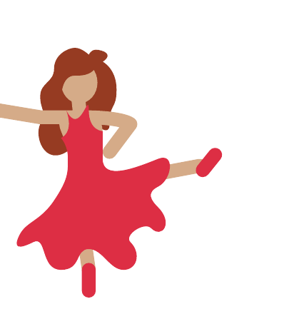
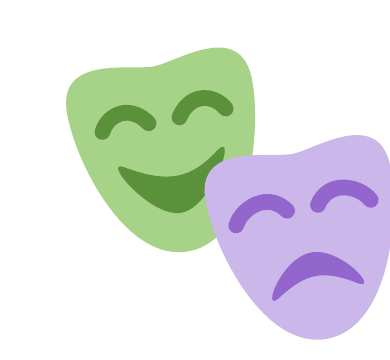

Welcome to Festival 2027
The Kootenay Festival of the Arts returns to Trail, BC for 2027. We
welcome students and performers of all ages to participate in
adjudicated workshops across music, dance, and speech disciplines.
Our History
Founded in 1930 as the Nelson Musical Festival Association, the
Kootenay Festival of the Arts is one of the oldest performing arts
festival traditions in British Columbia. What began as a joint
effort between the Trail Veterans' Orchestra and the Nelson
Symphony Orchestra has grown into a two-week celebration that has
run almost every year since 1930, alternating between Nelson and
Trail and inspiring generations of regional performers in piano,
strings, voice, choral, dance, drama, and speech arts.
Read more…
The Kootenay Music Festival had its inception with
representatives of the Trail Veteran's Orchestra and the
Nelson Symphony Orchestra setting up a joint committee to
plan for a Kootenay-wide festival in the spring of 1930.
Founders realized that one of the most challenging problems
was a suitable venue for the large number of participants
and audiences anticipated. The decision to use both the
Trinity Church and the Opera House proved very wise as,
within a short time, nearly 1,000 competitors were
registered in 187 classes.

The very first Kootenay Music Festival was held on May 29
& 30, 1930, in Nelson's venerable old Opera House.
Shortly after, on July 17, 1930, the Nelson Musical Festival
Association was incorporated under the Societies Act as the
governing body of the annual Nelson Music Festival, or
"Festival of the Arts" as it is referred to today.
A new Kootenay tradition had been born.
With financial and artistic success behind them, planning
for a 1931 festival in Trail began. A Trail Music Festival
Association was assembled, and the Kootenay Music Festival
has alternated between Nelson and Trail almost every year
since that date, with a wartime break from 1943–46 and from
1964–67 when, with help from the Canada Council, it was
once again revived. It was also cancelled due to the COVID
pandemic in 2020–2022 but for an online effort in Nelson.

This venerable two-week festival has been a cultural
cornerstone of the history of Nelson and Trail and all the
surrounding communities since 1930. Indeed, it is one of
the oldest festival traditions in British Columbia. Its
goals have always been to inspire, educate, evaluate and
promote regional students in the performing arts
disciplines of piano, strings, voice, choral, dance, drama
and speech arts. The festival supports our region's many
performing arts disciplines taught through schools and
private teachers. The Kootenay Festival of the Arts has
embraced new expressions of performing arts while
respecting and upholding historical forms.